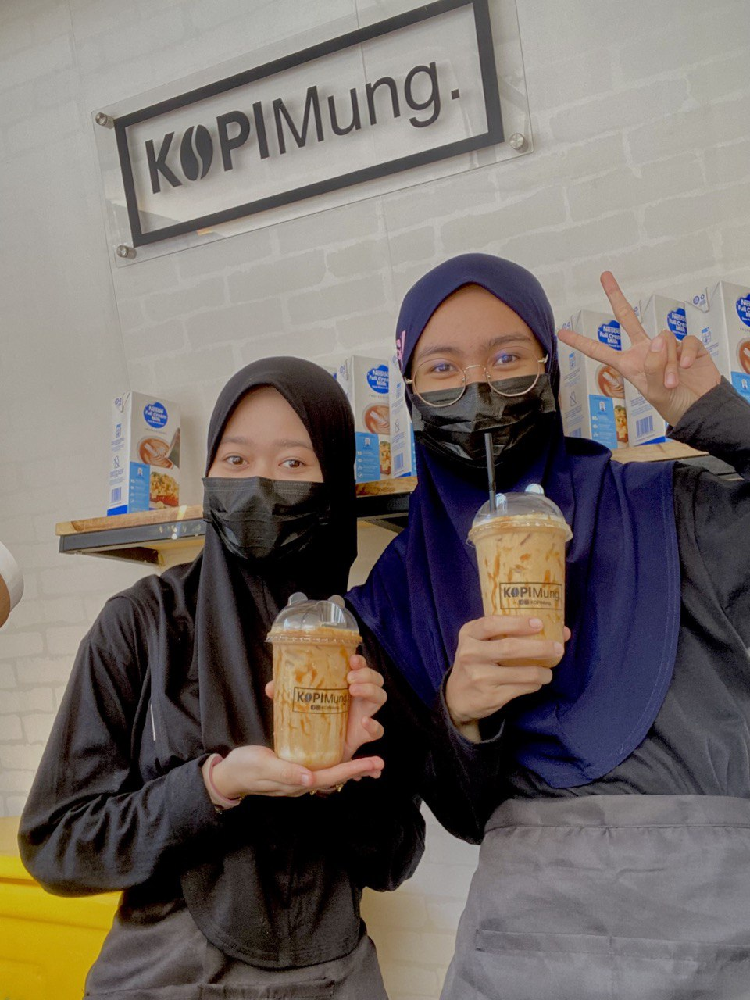

|
My experience on business 
I considered becoming a KOPIMung.’s runner without any investment. I cover the whole Kuala Nerus area as well as a part of Kuala Terengganu. My fiance was the owner of KOPIMung., and I decided to obtain fresh skills as a runner over semester break because he was running the Cash on Delivery (COD) business at the time. I questioned why I had not even tried new things previously, despite the fact that I had never been a runner before. After working as a KOPIMung. runner for two months, KOPIMung.'s owner began opening a business in his yard, which is also near to my residence. Now I'm learning how to be a great barista. So, I chose to work as a runner and a barista for this endeavour. On semester break, I started a business as a runner while working as a barista in the midst of the semester, coinciding with this topic that needed me to construct a project. Despite the fact that I dislike coffee, I started working as a barista on 03 November 2021, and have continued to do so to gain experience. This coffee business serves not just coffee water, but also milkshakes and frappes in a variety of flavours. Lot 134 Kampung Pancur Kuin, Padang Kemunting, Batu Rakit, 21020 Kuala Terengganu, Terengganu is the address of the business I manage with my fiancée. I used to work as a coffee water runner at the KOPIMung. Café before this one opened. I am currently one of the cafe's baristas. I was first unsure of myself because I had no prior job experience. But now I'm happy with the work I've done. What I learnt from managing this business is that it is not only about the profit gained, but also about the number of items sold, so that clients are constantly there to buy the things supplied. Being an entrepreneur needs a strong heart in order to overcome all hurdles and not give up. Becoming a runner has a number of hurdles. One of the challenges I face as a runner is the danger I confront when transporting water to clients on my motorcycle, especially when it is raining or hot outside. Furthermore, I am hampered by the fact that some clients find it difficult to pick up the phone when the COD is active. It makes it more difficult for me to deliver water to customers. Moreover, clients cancel a large number of orders, which is detrimental to my business because the coffee water is created fresh when the order is received and is not ready-made water. Aside from that, customers have asked free delivery even though I delivered the water order from a considerable distance away and using motorcycle fuel. Being a barista comes with its own set of challenges, but not quite as many as being a coffee runner. One of them is that I have to be more careful while steaming milk because it is hot and might cause a small injury. Being a barista is also not an easy job since I have to control the quantity of water I make and keep it clean at all times to prevent unpleasant things from happening. One of the steps I take after delivering coffee water during the rain is to ask the client for permission to send water when the rain has ceased or to notify the customer to pick up their own water if it is urgent. Regarding customers who are unable to pick up the phone, I will ask the customer to make payment online when he agrees, and I will ask that the customer give the exact location after completing the payment. As a result, the customer's difficulty in being unable to pick up the phone reduces my pressure, and I don't have to spend a long time searching for the client's residence and waiting for payment from the customer. It saves me time and allows me to make deliveries elsewhere more quickly. However, when a buyer cancels an order unexpectedly, I take the initiative to confirm numerous times with the buyer and ask them to make payment online if the transaction is large. Also, if a client requests free delivery, I ask him to personally pick up the water at home, so there is no payment while receiving water. |